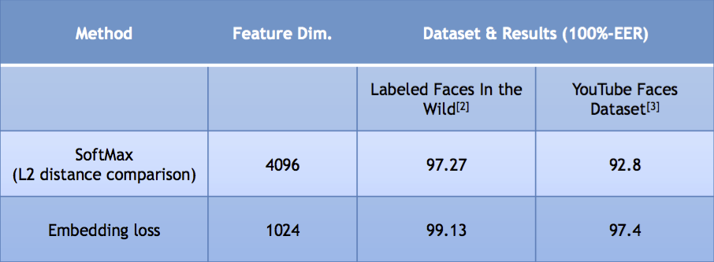

Overview
This page contains the download links for the source code for computing the VGG-Face CNN descriptor, described in [1].
The VGG-Face CNN descriptors are computed using our CNN implementation
based on the VGG-Very-Deep-16 CNN architecture as described in [1] and
are evaluated on
the Labeled Faces in the Wild [2] and the YouTube Faces [3] dataset.
Additionally the code also contains our fast implementation of the DPM Face detector of [3] using the cascade DPM code of [4].
Details of how to crop the face given a detection can be found in
vgg_face_matconvnet package below in class faceCrop in +lib/+face_proc
directory.
These models can be used for non-commercial research purposes under Creative Commons Attribution License.
Results

Downloads
Relevant Publications
[1]
O. M. Parkhi,
A. Vedaldi,
A. Zisserman
British Machine Vision Conference, 2015
@InProceedings{Parkhi15,
author = "Parkhi, O. M. and Vedaldi, A. and Zisserman, A.",
title = "Deep Face Recognition",
booktitle = "British Machine Vision Conference",
year = "2015",
}
The goal of this paper is face recognition -- from either a single
photograph or from a set of faces tracked in a video. Recent progress
in this area has been due to two factors: (i) end to end learning for
the task using a convolutional neural network (CNN), and (ii) the
availability of very large scale training datasets.
We make two contributions: first, we show how a very large scale dataset (2.6M
images, over 2.6K people) can be assembled by a combination of
automation and human in the loop, and discuss the trade off between
data purity and time; second, we traverse through the complexities of deep
network training and face recognition to present methods and procedures to
achieve comparable state of the art results on the standard LFW and YTF
face benchmarks.
[2]
G. B. Huang, M. Ramesh, T. Berg, E. Learned-Miller
Labeled faces in the wild: A database for studying face recognition in unconstrained environments.
Technical Report 07-49, University of Massachusetts, Amherst, 2007.
[3]
L. Wolf, T. Hassner, I. Maoz
Face Recognition in Unconstrained Videos with Matched Background Similarity.
Computer Vision and Pattern Recognition (CVPR), 2011.
[4]
M. Mathias, R. Benenson, M. Pedersoli, L. Van Gool
Face detection without bells and whistles.
European Conference on Computer Vision, 2014.
[5]
P. Felzenszwalb, R. Girshick, D. McAllester
Cascade Object Detection with Deformable Part Models.
Computer Vision and Pattern Recognition (CVPR), 2010.